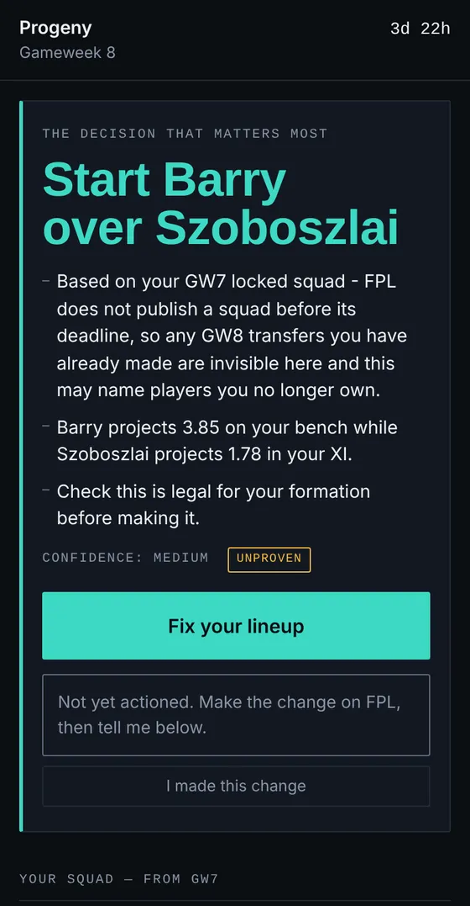

Projects / Case study
PWA · read-only
OSP Scout: one decision, one tap, no credentials.

- Problem
About a dozen friends in a group play FPL. They need the one decision that matters before a deadline, the reason for it and a fast route to making the change. The job is a changed team, not advice.
- Constraint
FPL terms prohibit a third party controlling an account (clause 27) or automating writes to it (clause 28(d)). I checked this against the 2026/27 terms.
- Decisions
- Read-only with a deliberate handoff. The app links to the exact FPL screen and a human makes the change.
- The client may re-select from published numbers and may never compute a new one (ADR 0005).
- Label every recommendation by what it has earned. Captaincy passed a 38-gameweek backtest and shows Backtested. Transfers and lineups have not and show Unproven.
- Open on the surface that matches the real moment in the gameweek, computed from FPL data.
- Result
Live on Cloudflare Pages with a pipeline that refreshes every three hours. I confirmed on my own phone on 2026-10-19 that the handoff lands on the right FPL screen and that stale data carries a real timestamp.
One of the seven acceptance checks is still untested: confirming a change as "landed" rather than "self-reported". It needs a gameweek in the right phase.
Source: osp-scout README.md and docs/BRIEF.md. The repository is private.
- What went wrong
On 2026-10-18 a DOM-wiring bug crashed the page during a live gameweek. Every Node test suite passed, because none of them ran a real browser. I fixed it the same day and added a real-Chrome test across every gameweek phase.
Source: docs/IMPLEMENTATION_PLAN.md in osp-scout.